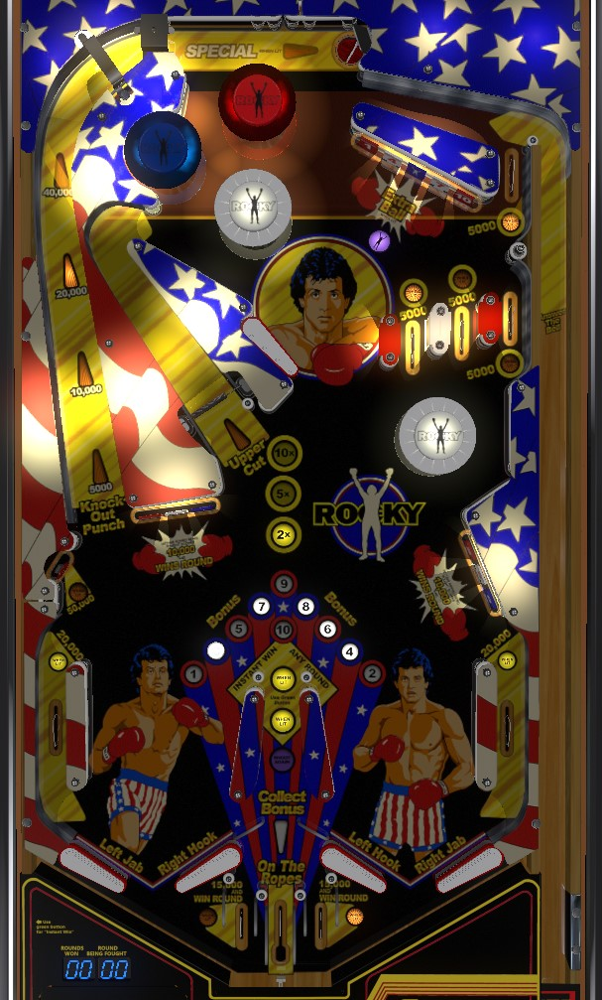

Not to be confused with Rock (Premier Gottlieb, 1985) or Adventures of Rocky and Bullwinkle and Friends (Data East, 1993).
Note the split table bottom with two separate sets of flippers. Complete rounds of boxing by hitting the drop target whose number matches the Current Round, which is shown on the left side of the table apron. Completing the 4 rollover lanes in the upper right lights an Instant Win, which lets you win a boxing round by pressing the second button on the left side of the cabinet- max 2 per game. Completed rounds contribute to bonus multiplier, which stays intact from ball to ball but resets once round 10 is either won or lost.
Small displays set into the apron show the current round number and the number of rounds won in the current boxing match. To win a round, simply knock down the drop target with the current round number on it. Rounds 1, 4, 7, and 10 are at the upper right bank of drop targets; 2, 5, and 8 are on the lower right; 3, 6, and 9 are in the lower left. Drop target banks only reset at the beginning of a ball or once the entire bank has been knocked down, so you may need to hit some incorrect targets to bring the correct target back to the playfield. Incorrect drop targets score 1,000 points; correct drop targets score 10,000 points; all drop targets score 1 bonus advance. Hitting approximately 15 switches without knocking down the correct drop target will cause the loss of the boxing round, and the game will automatically advance to the next round with a new required target.
Next to the display showing the current round number/required target is a display showing the number of rounds that have been won. At 2, 3, or 4 rounds won, bonus multiplier is 2x. At 5, 6, or 7 rounds won, bonus multiplier is 5x. At 8+ rounds won, bonus multiplier is 10x. Current round number, number of completed rounds, and bonus multiplier are carried over from ball to ball. However, as soon as round 10 is completed- whether it is won or lost- the entire bonus including multiplier is instantly collected and the boxing match resets to round 1 with 0 rounds won and no bonus multipliers. At this time, the center drop target of the upper right bank is also lit for extra ball.
There are 4 rollover lanes in the upper right of the game- a set of 3, and a fourth just above the right most of the three. Roll through a lit lane to unlight it. Lit lanes score 5,000 points. The location of the lights on these lanes can be rotated via lane change with the right flipper only. Unlighting all 4 lanes on the same ball lights the lower left standup target for 50,000 points and awards an Instant Win. Press the green button located on the left side of the cabinet just behind the left flipper button to use an Instant Win, which- as the name suggests- instantly wins the current boxing round. A maximum of 2 Instant Wins are allowed per player per game. The number of lit lower side lanes indicates how many Instant Wins are available for use. Progress on the top lanes resets at the start of each ball.
A shot to the left orbit that lands in the saucer at the top of the game scores the currently lit value. The lit value starts at 5,000 points, and is increased to 10,000, then 20,000, then 40,000 points by winning rounds at the upper right or lower left drop target banks. Winning 6 rounds on a single ball in play lights the top saucer for a special. If the ball ricochets into the top saucer rather than ending up there via the left orbit, only 1,000 points are awarded. Any shot to the top saucer, whether via the left orbit or not, advances one bumper from unlit to lit or from lit to flashing.
The center spinner always scores 1,000 points per spin and is a good way to get the ball from the lower right playfield to the upper flipper for shots at the upper right drop target bank.
There are 4 pop bumpers: three at the top of the game, and one just below the set of three top lanes in the middle-right. Which bumpers are lit can be rotated via lane change with the right flipper. Lit bumpers score 1,000 points; flashing bumpers score 10,000 points; unlit bumpers score 100. Any shot to the top saucer adds a new lit bumper, or causes one bumper to flash if all are lit.
The bottom of the table on Rocky is split into two distinct sections, each with their own pair flippers and slingshots. The left flipper button operates the left flipper in each pair, and the right button operates the right flipper in each pair. Between the outer flippers and the table's edges are lower side lanes that score 1,000 points when not lit and 20,000 when lit. Under certain sets of game settings, these lanes can be lit after completing the set of 4 top lanes. There are three lanes below the flippers in the center of the table, which can be accessed by a ball that falls through the gap between the two inner slingshots, or a ball that rolls up the rail beyond the hinge of the inner flippers. The center most of the three lanes at the very bottom center of the playfield is the On The Ropes lane, which collects the current bonus- resetting the base bonus, but not the multiplier- before kicking the ball back into play. On either side of the On the Ropes lane are two lanes labelled 15,000 and Win Round; only one of these are lit at a time, alternating with lane change. These lanes score 15,000 points and win the current boxing round when lit, or just the 15,000 points if not lit.
Bonus is advanced by hitting any drop target. Max base bonus is 19,000 points. Bonus multiplier is 2x if 2-4 boxing rounds have been won, 5x for 5-7 boxing rounds won, 10x for 8+ rounds won, and 1x otherwise. Bonus multiplier carries over from ball to ball, but resets once boxing round 10 is decided. Bonus can be collected mid-ball by completing boxing round 10 or making the On the Ropes lane in the bottom center of the table. Both bonus collects score the full bonus with multiplier; completing round 10 resets both the base bonus and multiplier, while On the Ropes resets only the base bonus. There is no carryover for base bonus.